access to the router
Using WinSCP and Putty
Two programs that can be used with the ROOter firmware on your router are WinSCP and Putty.
WinSCP is a program that allows you to access files on the router and copy them to and from your computer. It also allows you to edit files on the router. Think of it as Windows Explorer for the router.
Putty is a terminal program that is used to access the shell program running on the router and gives you access to the Linux command line.
WinSCP
WinSCP is available for download from WinSCP Run this file to install WinSCP.
The first time you run the program you will be presented with the login dialog, where you enter the necessary information to log into the router.
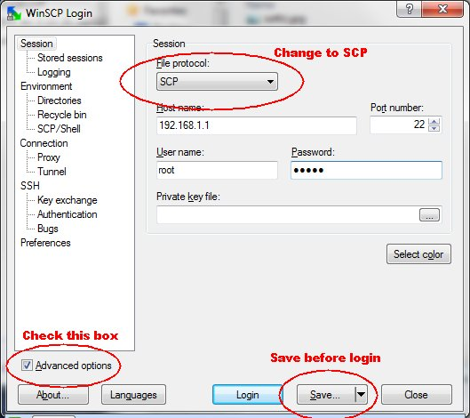
Change the File protocol to SCP, enter the IP Address of the router as the Host name, enter root as the User name and the password you set in the router's web interface as Password. Check the Advanced options box and, before clicking on Save, click on Environment -> SCP/Shell.
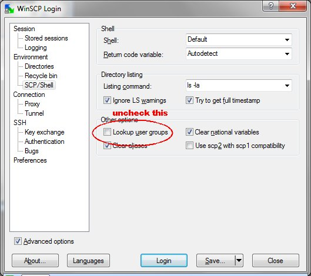
Uncheck the Lookup user groups box to avoid a Directory not found warning. Then click on Save.
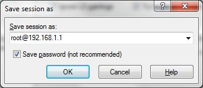
Check the Save password box and click on OK.
You will then be shown the Stored Sessions dialog. The next time you run WinSCP this is where you will start from.
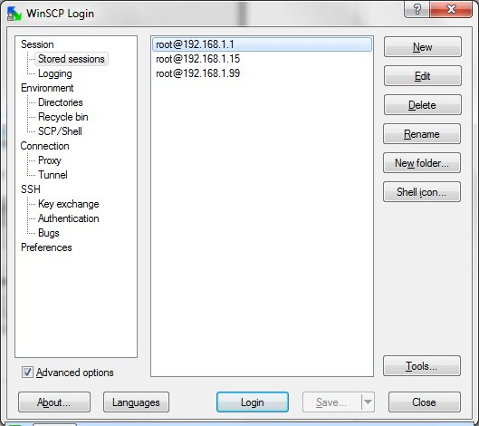
Select the session you want to use and click on Login.
As WinSCP starts to log in to the router, you may get a message box appearing that says the "Server's host key is not in the cache ". Just click on Yes to ignore this. It will only appear the very first time you log on to the router.
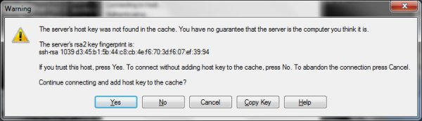
The program will log into the router and, if successful, will bring up the main window.
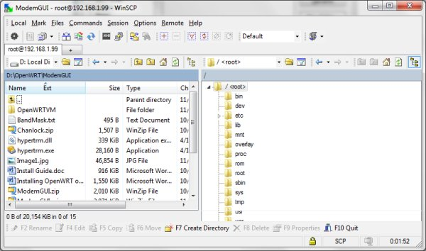
By default the the program uses the Commander Interface with the files on the computer shown on the left and the files on the router shown on the right.
If you prefer an Explorer style interface that shows only the files on the router, before you click on Login click on Preferences and select the Explorer Interface.
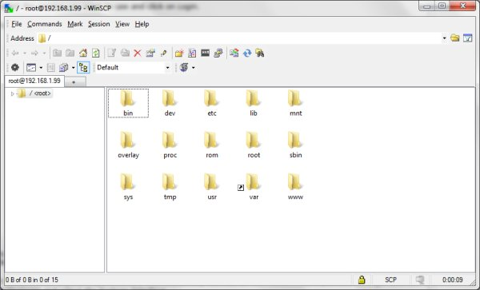
To copy files from the router to the computer, or vise versa, simply drag them to the appropriate window. A Copy dialog will appear. Click on Copy to transfer the file.
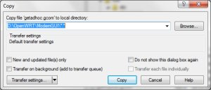
To edit a file, right click on it and select Edit.
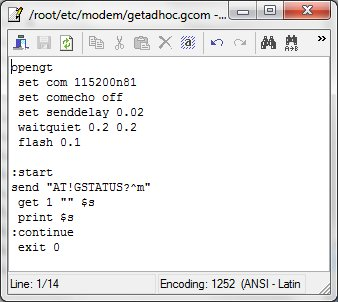
For more information on WinSCP visit their web site at WinSCP Documentation.
Putty
Putty is available for download from Putty Place it in a folder and execute it to start the putty terminal.
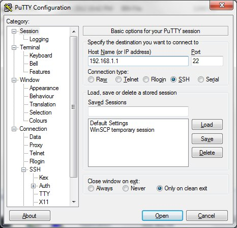
Enter the IP Address of the router as the Host Name and select SSH as the Connection type. Click on Open to connect to the router.
A terminal window will open and you will be asked to Login as:. Type root and press Enter. You will then be asked for the password.
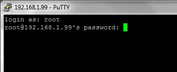
Enter the password for the router and press Enter. You will then execute the router's shell program and have command line access.
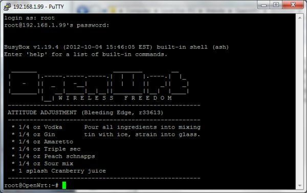
Typing help will give a list of the built-in commands available to you.